CHẨN ĐOÁN TIM NHANH PHỨC BỘ GIÃN RỘNG
Chương 1. Tim nhanh phức bộ giãn rộng
Tim nhanh phức bộ QRS giãn rộng
Phức bộ QRS giãn rộng
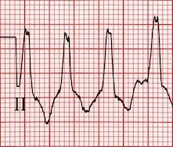
- Xảy ra trong các rối loạn của dẫn truyền xung động tại các thất
- Các thất không được khử cực chỉ qua hệ thống dẫn truyền
- Mà còn qua cơ tim co bóp (working myocardium)
- Xung động lan chậm qua cơ tim
- Do đó, khử cực thất sẽ diễn ra chậm hơn (>0.12s)
- Trên ECG sẽ có phức bộ QRS giãn rộng (>0.12s)
Tim nhanh phức bộ giãn rộng
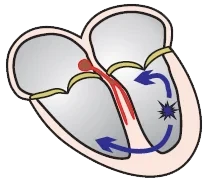
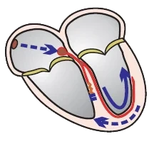
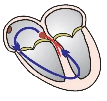
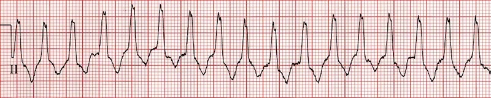
- Tim nhanh phức bộ giãn rộng (wide complex tachycardia – WCT) được định nghĩa là:
- Tim nhanh (tần số tim > 100/phút)
- Kèm phức bộ QRS giãn rộng (≥ 0.12s)
Tim nhanh phức bộ giãn rộng
- Tim nhanh phức bộ giãn rộng có thể có 3 nguyên nhân:
- Tim nhanh thất (ventricular tachycardia – VT) (chiếm 80% các trường hợp tim nhanh phức bộ giãn rộng)
- Các thất được khử cực từ một ổ ngoại vị tại thất
- Nằm ở đâu đó dưới chỗ chia đôi của các nhánh bó His
- Các thất được khử cực từ một ổ ngoại vị tại thất
- Tim nhanh trên thất (supraventricular tachycardia – SVT) có dẫn truyền lệch hướng (aberrant conduction)
- Các thất chỉ được khử cực qua một nhánh bó His
- Bệnh nhân có block nhánh bó His có sẵn hoặc mang tính chức năng
- Các thất chỉ được khử cực qua một nhánh bó His
- Tim nhanh trên thất có một đường dẫn truyền phụ (accessory pathway) (AVRT nghịch chiều – antidromic AVRT)
- Trong hội chứng WPW, các thất và nhĩ được nối với nhau qua 2 vị trí (nối nhĩ thất – AV junction và đường dẫn truyền phụ)
- Nếu xung động bắt đầu quay vòng giữa nhĩ và thất (vòng vào lại – reentry), sẽ tạo ra AVRT nghịch chiều
- Các thất được khử cực qua đường dẫn truyền phụ, lan xuyên qua cơ tim, không qua hệ thống dẫn truyền
- Các nguyên nhân hiếm gặp của tim nhanh phức bộ giãn rộng:
- Rối loạn điện giải nặng (tăng kali máu – hyperkalemia)
- Ngộ độc thuốc chẹn kênh natri
- Tim nhanh do máy tạo nhịp
Chẩn đoán phân biệt
- Các thuật toán chẩn đoán được dùng để chẩn đoán phân biệt cơ chế của tim nhanh phức bộ giãn rộng (thuật toán Brugada phân biệt tim nhanh thất với SVT dẫn truyền lệch hướng)
- 10% các trường hợp tim nhanh phức bộ giãn rộng (WCT) không thể xác định chắc chắn
- Chẩn đoán được cơ chế là yếu tố quyết định đối với điều trị
- WCT là một cấp cứu, thường đe dọa tính mạng, và đòi hỏi điều trị khẩn cấp và ngay lập tức
- Đối với tim nhanh phức bộ giãn rộng:
- 80% các trường hợp là tim nhanh thất
- Nếu bệnh nhân trên 50 tuổi, thì 90% các trường hợp là tim nhanh thất
- Nguyên tắc là: tim nhanh phức bộ giãn rộng không rõ cơ chế luôn phải được điều trị như tim nhanh thất
Xác suất của cơ chế
- Xác suất của cơ chế trong tim nhanh phức bộ giãn rộng:
- Tim nhanh thất nhiều khả năng hơn nếu bệnh nhân có:
- Tuổi > 35
- Bệnh tim thiếu máu cục bộ
- Tiền sử nhồi máu cơ tim
- Suy tim mạn
- Bệnh cơ tim
- Đột tử do tim trong gia đình
- Tim nhanh trên thất - SVT (dẫn truyền lệch hướng, hoặc có đường dẫn truyền phụ) nhiều khả năng hơn nếu:
- Block nhánh có sẵn (RBBB – block nhánh phải, LBBB – block nhánh trái)
- Block đã hiện diện trên ECG cũ trong nhịp xoang
- Lưu ý: Block cũng có thể xuất hiện trong cơn tim nhanh (block chức năng)
- Hội chứng WPW có sẵn
- Trên ECG trong nhịp xoang có sóng delta
- Lưu ý: Đường dẫn truyền phụ có thể không hoạt động (không có sóng delta trên ECG)
- Và trở nên hoạt động chỉ trong cơn tim nhanh
- Bệnh nhân có tiền sử SVT phức bộ giãn rộng
- Đã cắt cơn nhờ làm chậm dẫn truyền nút nhĩ thất (adenosine, nghiệm pháp cường phế vị)
- Nếu bệnh nhân là người trẻ khỏe mạnh không có bệnh tim cấu trúc
- Block nhánh có sẵn (RBBB – block nhánh phải, LBBB – block nhánh trái)
- Tim nhanh thất nhiều khả năng hơn nếu bệnh nhân có:
ECG và tim nhanh thất
- Tim nhanh thất (VT) biểu hiện các đặc điểm ECG đặc trưng
- Mỗi đặc điểm có độ nhạy và độ đặc hiệu riêng
- VT không có tất cả các đặc điểm trên ECG cùng một lúc
- Cơ chế của tim nhanh phức bộ giãn rộng
- Phải được xác định rõ trong vài giây (nhằm mục đích điều trị)
- Để chẩn đoán nhanh tim nhanh phức bộ giãn rộng
- Các thuật toán chẩn đoán được sử dụng
- Các thuật toán này phân biệt VT với tim nhanh phức bộ giãn rộng nguồn gốc trên thất
- Các thuật toán chẩn đoán được sử dụng
- Các đặc điểm ECG của tim nhanh thất:
- Tần số tim > 100/phút
- Phức bộ QRS giãn rộng (≥ 0.12s, thường > 0.16s)
- Có 2 loại VT với phức bộ QRS hẹp (≤ 0.12s), đây là một nghịch lý:
- VT xuất phát từ vách liên thất
- Tim nhanh thất phân nhánh (fascicular VT)
- Có 2 loại VT với phức bộ QRS hẹp (≤ 0.12s), đây là một nghịch lý:
- Không có hình ảnh ECG điển hình của block nhánh (LBBB, RBBB)
- RSr' ở V1 ("tai thỏ" bên trái lớn hơn)
- Trục lệch phải cực độ "north-west"
- Phân ly nhĩ thất (AV dissociation)
- Nhát bắt được (capture beat)
- Nhát hỗn hợp (fusion beat)
- Đồng dạng trước tim (precordial concordance) (dương hoặc âm)
- Dấu hiệu Brugada
- Dấu hiệu Josephson
- Thời gian sóng R ở chuyển đạo II (≥ 50ms)
Các thuật toán chẩn đoán
- Để chẩn đoán nhanh tim nhanh phức bộ giãn rộng
- Các thuật toán chẩn đoán được sử dụng
- Mỗi thuật toán đều có bẫy chẩn đoán riêng, và một số cơn tim nhanh không thể phân biệt với độ chính xác 100%
- Vấn đề chính là tim nhanh có tiền kích thích (preexcitation tachycardia – PTX) có thể bị phân loại nhầm thành tim nhanh thất (VT)
- Các thuật toán chẩn đoán được dùng phổ biến nhất
- Thuật toán Brugada
- Thuật toán Brugada-Stuerer (VT so với PTX)
- Thuật toán aVR (Vereckei) (được cho là chính xác nhất và đơn giản nhất)
- Phân tích chuyển đạo II (tiêu chuẩn Pavas)
- Thuật toán Griffith
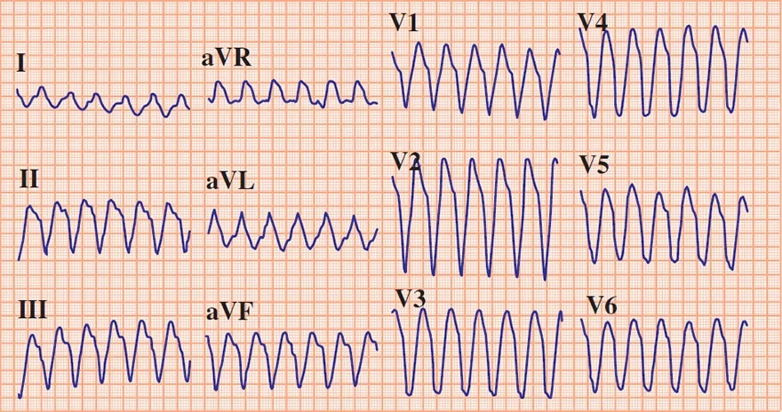
Tim nhanh phức bộ giãn rộng
- Độ rộng QRS 0.2s
- Tần số tim 160/phút
- ECG cho thấy các dấu hiệu điển hình của tim nhanh thất
- Độ rộng QRS 0.2s (QRS > 0.16s là điển hình cho VT)
- Đồng dạng trước tim âm (tất cả QRS từ V1-V6 đều âm)
- ECG hướng tới tim nhanh thất
- Thuật toán Brugada (thuật toán chẩn đoán được dùng phổ biến nhất)
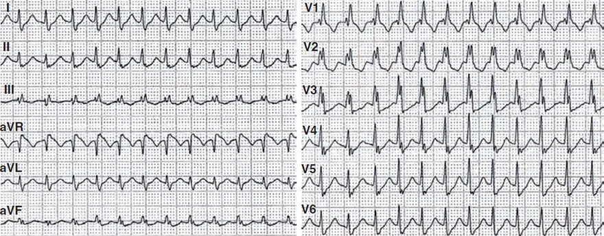
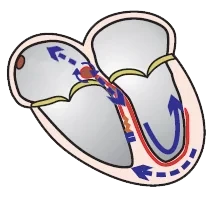
Tim nhanh phức bộ giãn rộng
- Độ rộng QRS 0.12s
- Tần số tim 212/phút
- Hình ảnh điển hình của block nhánh phải (RBBB)
- rSR' (V1) - "tai thỏ" bên phải nổi trội
- Sóng S sâu (V6)
- ECG cho thấy tim nhanh trên thất kèm RBBB
- Đây là tim nhanh vào lại nút nhĩ thất (AVNRT)
- Thuật toán Brugada (thuật toán chẩn đoán được dùng phổ biến nhất)
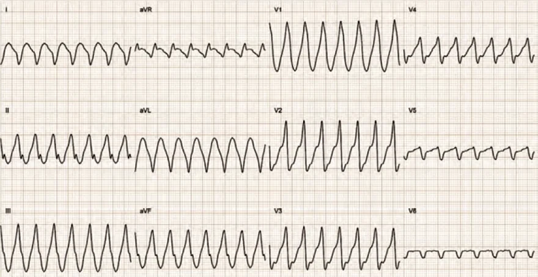
Tim nhanh phức bộ giãn rộng
- Độ rộng QRS 0.2s
- Tần số tim 200/phút
- Bệnh nhân có hội chứng WPW
- Trên ECG trong nhịp xoang, đã có sóng delta
- Tim nhanh thất và SVT có đường dẫn truyền phụ
- Chúng gần như giống hệt nhau về hình thái trên ECG
- Thuật toán Brugada-Stuerer (VT so với PXT)
- Được dùng để phân biệt VT với PXT (SVT có tiền kích thích – pre-excited SVT)
- Với xác suất cao, ECG cho thấy AVRT nghịch chiều
- Vì bệnh nhân có hội chứng WPW (trên ECG trong nhịp xoang)
- Trong AVRT, xung động quay vòng giữa nhĩ và thất
- Tuy nhiên, bệnh nhân có hội chứng WPW cũng có thể có tim nhanh thất
- Khi đó xung động không quay vòng mà xuất phát từ một ổ ngoại vị tại thất
- Vì bệnh nhân có hội chứng WPW (trên ECG trong nhịp xoang)
Chương 2. Thuật toán Brugada (VT và SVT dẫn truyền lệch hướng)
Thuật toán Brugada (tim nhanh thất so với SVT có dẫn truyền lệch hướng)
Tim nhanh phức bộ giãn rộng
- Tim nhanh phức bộ giãn rộng (wide complex tachycardia – WCT) được định nghĩa là:
- Tim nhanh (tần số tim > 100/phút)
- Kèm phức bộ QRS giãn rộng (≥ 0.12s)
Tim nhanh phức bộ giãn rộng có 3 nguyên nhân chính
- Tim nhanh phức bộ giãn rộng có 3 nguyên nhân chính
- Tim nhanh thất (ventricular tachycardia – VT) (chiếm 80% các trường hợp tim nhanh phức bộ giãn rộng)
- Tim nhanh trên thất (supraventricular tachycardia – SVT) kèm dẫn truyền lệch hướng (aberrant conduction)
- Tim nhanh trên thất kèm đường dẫn truyền phụ (accessory pathway) — AVRT nghịch chiều (antidromic AVRT)
- Các nguyên nhân hiếm gặp của tim nhanh phức bộ giãn rộng:
- Rối loạn điện giải nặng (tăng kali máu)
- Ngộ độc thuốc chẹn kênh natri
- Tim nhanh do máy tạo nhịp
- Các nguyên nhân hiếm gặp của tim nhanh phức bộ giãn rộng:
- Để chẩn đoán phân biệt cơ chế của tim nhanh phức bộ giãn rộng, người ta sử dụng các thuật toán chẩn đoán
- 10% các trường hợp tim nhanh phức bộ giãn rộng (WCT) không thể xác định rõ
- Chẩn đoán cơ chế là điều quan trọng đối với điều trị
- WCT là một tình trạng cấp cứu, thường đe dọa tính mạng, và đòi hỏi điều trị cấp cứu khẩn trương
- Đối với tim nhanh phức bộ giãn rộng:
- 80% là tim nhanh thất
- Nếu bệnh nhân trên 50 tuổi, thì 90% là tim nhanh thất
- Nguyên tắc là, tim nhanh phức bộ giãn rộng không rõ cơ chế luôn được điều trị như tim nhanh thất
Thuật toán Brugada (VT và SVT dẫn truyền lệch hướng)
- Đây là thuật toán được sử dụng phổ biến nhất để phân biệt cơ chế của tim nhanh phức bộ giãn rộng
- Phân biệt tim nhanh thất với tim nhanh trên thất (SVT) dẫn truyền lệch hướng
- Không phân biệt được SVT có tiền kích thích (pre-excited SVT – PXT) — AVRT nghịch chiều
- Thuật toán Brugada có 3 bẫy chẩn đoán
- Không phân biệt được tim nhanh thất vô căn (idiopathic ventricular tachycardia)
- SVT có tiền kích thích (AVRT nghịch chiều)
- Có thể phân loại nhầm thành tim nhanh thất
- Tim nhanh thất do vòng vào lại nhánh (branch reentry ventricular tachycardia)
- Có thể phân loại nhầm thành SVT dẫn truyền lệch hướng
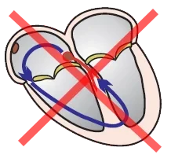
Tim nhanh phức bộ giãn rộng
- Thuật toán Brugada phân biệt cơ chế của tim nhanh phức bộ giãn rộng
- Phân biệt tim nhanh thất với tim nhanh trên thất (SVT) dẫn truyền lệch hướng
- Không phân biệt được SVT có tiền kích thích (AVRT nghịch chiều)
Thuật toán Brugada trong thực hành lâm sàng
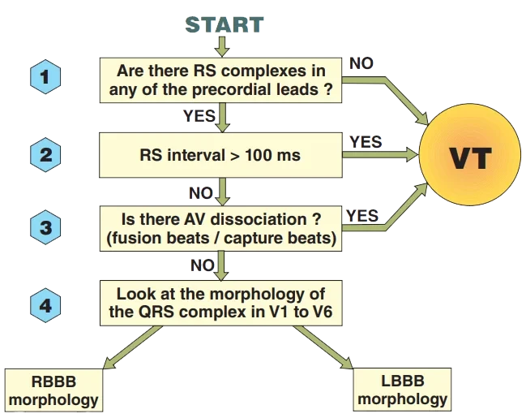
- Độ nhạy: 98% Độ đặc hiệu: 96%
- Thuật toán Brugada gồm 2 phần
- Tim nhanh thất (VT) thường được chẩn đoán dễ dàng và nhanh chóng ngay ở phần 1
- Sử dụng 4 tiêu chuẩn ECG
- Vấn đề nảy sinh khi tim nhanh phức bộ giãn rộng (WCT) biểu hiện dưới dạng block nhánh (bundle branch block) — LBBB (block nhánh trái), RBBB (block nhánh phải)
- WCT không thỏa mãn 4 tiêu chuẩn ECG đầu tiên
- Khi đó WCT được đánh giá theo phần 2 của thuật toán
- WCT không thỏa mãn 4 tiêu chuẩn ECG đầu tiên
Thuật toán Brugada (Phần 1)
- 1. Có phức bộ RS ở các chuyển đạo trước tim hay không
- 2. Khoảng RS > 100ms
- 3. Phân ly nhĩ thất (AV dissociation)
- 4. Nếu 3 điều kiện đầu không được thỏa mãn
- Thì đánh giá hình thái ECG của WCT
(xem có giống RBBB hay LBBB không) - Chuyển sang Phần 2 của thuật toán Brugada
- Có thể là tim nhanh thất hoặc SVT dẫn truyền lệch hướng
- Thì đánh giá hình thái ECG của WCT
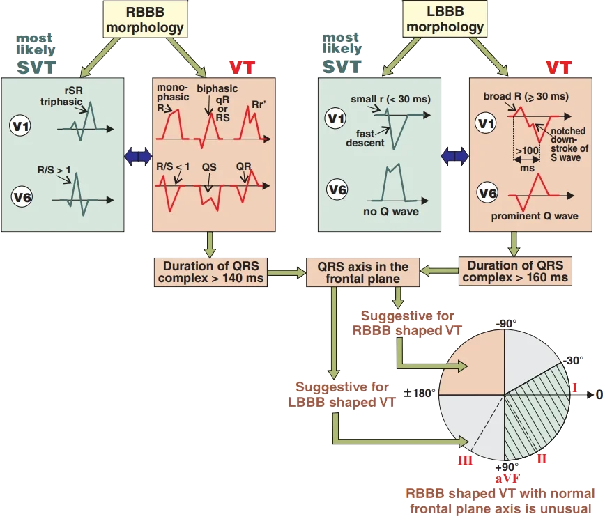
Thuật toán Brugada (Phần 2)
- Đánh giá hình thái ECG ở các chuyển đạo (V1 và V6)
- Nếu hình thái ở (V1, V6) đặc trưng cho RBBB hoặc LBBB
- Thì nhiều khả năng là SVT dẫn truyền lệch hướng
- Nếu hình thái ở (V1, V6) không giống RBBB hoặc LBBB
- Thì nhiều khả năng là tim nhanh thất
- Trục điện tim bình thường (+90° đến -30°)
- Tuy nhiên, điều này lại không ủng hộ VT
- WCT có hình thái block nhánh Tawara
- Đôi khi không thể phân biệt được
Thuật toán Brugada – Các hạn chế
- Không phân biệt được tim nhanh thất vô căn:
- Tim nhanh thất xuất phát từ đường ra (outflow tract)
- Có ổ ngoại vị (ectopic focus) nằm ở các đường ra
- Vectơ khử cực thất tổng hợp hướng về chuyển đạo II (tức là trục điện tim bình thường)
- Điều này hiếm gặp trong VT
- Tim nhanh thất phân nhánh (fascicular VT)
- Có vòng vào lại (reentry) trong vùng một phân nhánh (fascicle) duy nhất của nhánh Tawara trái
- Tạo ra trên ECG hình ảnh SVT kèm RBBB
- Có vòng vào lại (reentry) trong vùng một phân nhánh (fascicle) duy nhất của nhánh Tawara trái
- Tim nhanh thất xuất phát từ đường ra (outflow tract)
- SVT có tiền kích thích (AVRT nghịch chiều) bị phân loại sai thành tim nhanh thất
- Vì tâm thất được khử cực qua đường dẫn truyền phụ từ phía đáy tim
- Vectơ khử cực thất tổng hợp hướng về chuyển đạo II (tức là trục điện tim bình thường)
- Điều này hiếm gặp trong VT
- Tim nhanh thất do vòng vào lại bị phân loại sai thành SVT dẫn truyền lệch hướng
- Vòng vào lại đi qua cả hai nhánh Tawara hoặc qua cả hai phân nhánh
- Tạo ra trên ECG hình ảnh SVT kèm block nhánh Tawara
- Vòng vào lại đi qua cả hai nhánh Tawara hoặc qua cả hai phân nhánh
- Có 2 loại VT với phức bộ QRS hẹp (≤ 0.12s), đây là một nghịch lý:
- VT xuất phát từ vách liên thất
- Tim nhanh thất phân nhánh
- Khi đó 2 loại VT này bị đánh giá là tim nhanh trên thất (đây là một sai lầm)
Tim nhanh phức bộ giãn rộng
- Độ rộng QRS: 0.2s
- Tần số tim 160/phút
- Thuật toán Brugada
- Điều kiện 1: Có phức bộ RS ở các chuyển đạo trước tim hay không (Không)
- Các chuyển đạo trước tim chỉ thấy sóng S sâu (đồng dạng trước tim âm – negative precordial concordance)
- Điều này chỉ ra tim nhanh thất
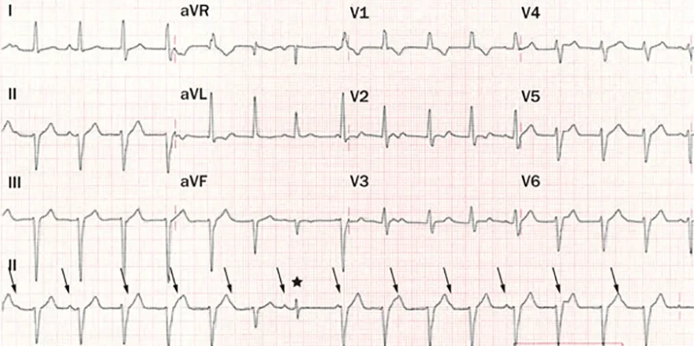
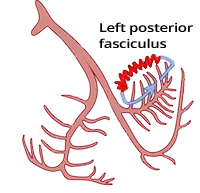
Tim nhanh phức bộ hẹp
- Độ rộng QRS: 0.12s (các phức bộ QRS giãn rộng ở mức ranh giới)
- Mặc dù đây là VT
- Tần số tim 100/phút
- Thuật toán Brugada
- Điều kiện 3: Có phân ly nhĩ thất, nhát hỗn hợp, nhát bắt được hay không (Có)
- Trên ECG thấy các dấu hiệu chủ chốt của tim nhanh thất
- Phân ly nhĩ thất
- Các sóng P (mũi tên) độc lập với các phức bộ QRS
- Nhát hỗn hợp (fusion beat) (phức bộ QRS thứ 6 trên chuyển đạo II ghi liên tục)
- Nhát bắt được (capture beat) (phức bộ QRS thứ 7 trên chuyển đạo II ghi liên tục)
- Phân ly nhĩ thất
- Đây là tim nhanh thất phân nhánh (vòng vào lại nằm ở phân nhánh trái sau)
- Hình ảnh block nhánh Tawara phải
- Sóng R chiếm ưu thế (V1)
- Sóng S sâu và rộng (V6)
- Block phân nhánh trái trước (left anterior hemiblock)
- QRS âm (II, aVF)
- QRS dương (I)
- Hình ảnh block nhánh Tawara phải
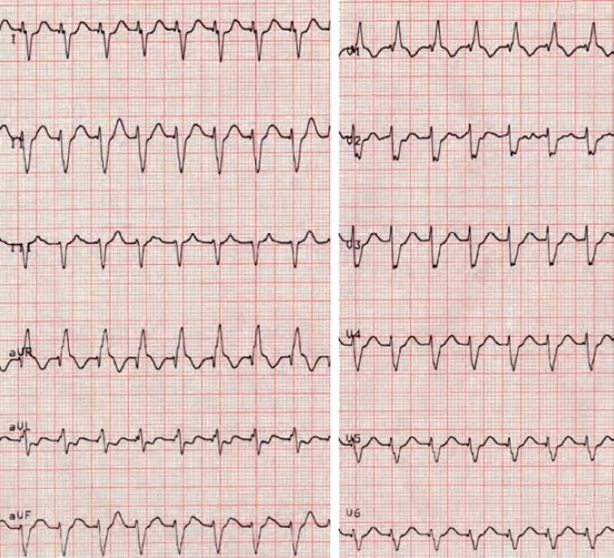
Tim nhanh phức bộ giãn rộng
- Độ rộng QRS: 0.13s
- Tần số tim 143/phút
- Hình ảnh block nhánh phải
- rsR´ (V1)
- Sóng S sâu và rộng (V6)
- Thuật toán Brugada (Phần 2)
- Có hình ảnh block nhánh phải (RBBB)
- Tuy nhiên, trục điện tim lệch phải cực độ
- Điều này loại trừ SVT kèm RBBB
- Tuy nhiên, trục điện tim lệch phải cực độ
- Có hình ảnh block nhánh phải (RBBB)
- Đây là tim nhanh thất phân nhánh
(vòng vào lại ở phân nhánh trái sau)- Hình ảnh block nhánh phải
- Hình ảnh trục lệch phải cực độ
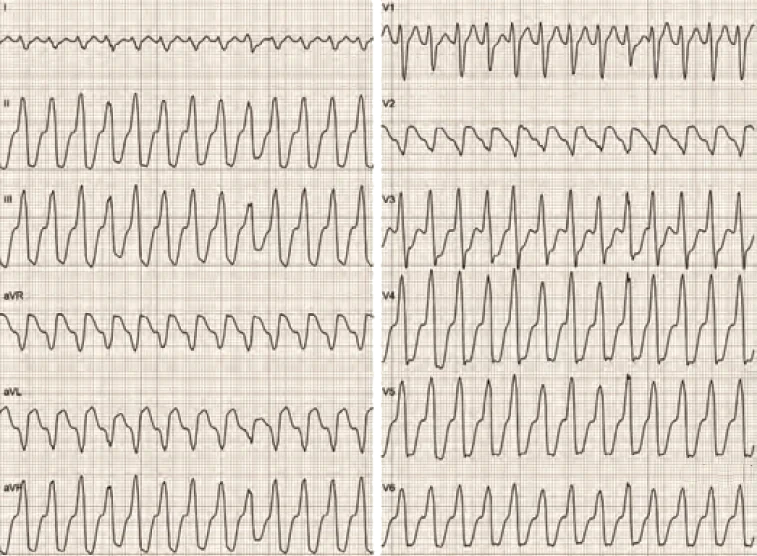
Tim nhanh phức bộ giãn rộng
- Thời gian QRS 0.18s
- Tần số tim 166/phút
- Luân phiên QRS (QRS alternans)
- Biên độ các phức bộ QRS thay đổi đều đặn
- Thuật toán Brugada
- Điều kiện 2: Khoảng RS > 100ms (Có)
- Đây là tim nhanh thất
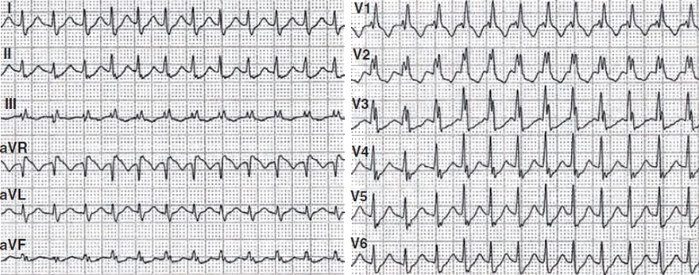
Tim nhanh phức bộ giãn rộng
- Thời gian QRS 0.14s
- Tần số tim 212/phút
- Thuật toán Brugada (Phần 2)
- Hình ảnh điển hình của RBBB ("tai thỏ" bên phải lớn hơn)
- Trục điện tim bình thường (sóng R chiếm ưu thế ở chuyển đạo II)
- Đây là SVT kèm RBBB
- Cụ thể là AVNRT (tim nhanh vào lại nút nhĩ thất) kèm RBBB
Tim nhanh phức bộ giãn rộng
- Thời gian QRS 0.2s
- Tần số tim 200/phút
- Bệnh nhân có hội chứng WPW
- Trên ECG, trong nhịp xoang, có sóng delta
- Thuật toán Brugada (Phần 2)
- Hình ảnh không điển hình của RBBB
- Trục điện tim lệch phải
- Theo thuật toán Brugada, đây là một tim nhanh thất
- Tuy nhiên, bệnh nhân thực sự có AVRT nghịch chiều (SVT có tiền kích thích)
- Thuật toán Brugada nhận định sai SVT có tiền kích thích thành VT
- Đôi khi người ta sử dụng thuật toán Brugada cải biên
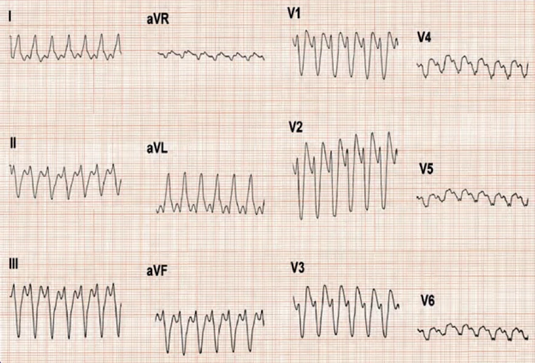
Tim nhanh phức bộ giãn rộng
- Thời gian QRS 0.2s
- Tần số tim 165/phút
- Thuật toán Brugada
- Điều kiện 1: Có phức bộ RS ở các chuyển đạo trước tim hay không (Không)
- Ở các chuyển đạo trước tim chỉ có sóng S sâu (đồng dạng trước tim âm)
- Đây là tim nhanh thất có hình ảnh RBBB
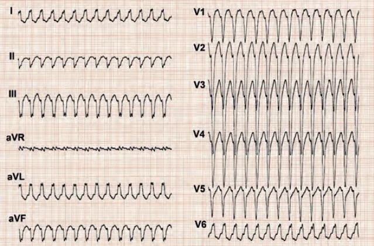
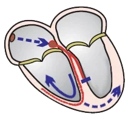
Tim nhanh phức bộ giãn rộng
- Thời gian QRS 0.18s
- Tần số tim 165/phút
- Thuật toán Brugada (Phần 2)
- Hình ảnh điển hình của LBBB
- Trục điện tim lệch về góc phần tư trên bên trái
- Đây là hình ảnh LBBB bình thường
- Nhiều khả năng nhất đây là SVT kèm LBBB
- Tim nhanh thất ít khả năng hơn
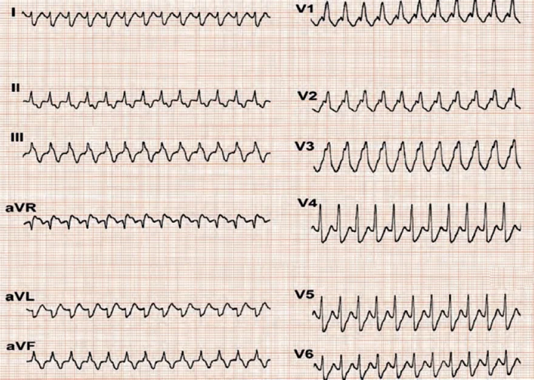
Tim nhanh phức bộ giãn rộng
- Thời gian QRS 0.14s
- Tần số tim 158/phút
- Thuật toán Brugada (Phần 2)
- Hình ảnh điển hình của RBBB
- Trục điện tim lệch về góc phần tư dưới bên phải
- Điều này có thể gặp trong RBBB
- Nhiều khả năng nhất đây là SVT kèm RBBB
- Tim nhanh thất ít khả năng hơn
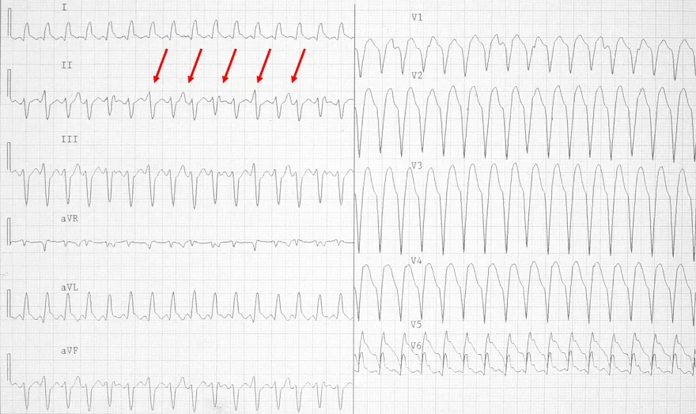
Tim nhanh phức bộ giãn rộng
- Thời gian QRS 0.18s
- Tần số tim 214/phút
- Thuật toán Brugada
- Điều kiện 3: Có phân ly nhĩ thất (Có)
- Các sóng P (mũi tên) độc lập với các phức bộ QRS
- Điều kiện 3: Có phân ly nhĩ thất (Có)
- Đây là tim nhanh thất
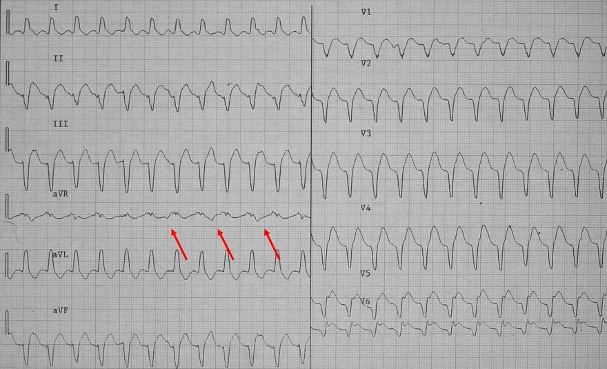
Tim nhanh phức bộ giãn rộng
- Thời gian QRS 0.18s
- Tần số tim 150/phút
- Thuật toán Brugada
- Điều kiện 1: Có phức bộ RS ở các chuyển đạo trước tim hay không (Không)
- Đây là tim nhanh thất
- Điều này còn được khẳng định bởi phân ly nhĩ thất (mũi tên)
Chương 3. Thuật toán Brugada-Stuerer (VT và SVT có tiền kích thích)
Thuật toán Brugada-Stuerer (tim nhanh thất và SVT có tiền kích thích)
Thuật toán Brugada
- Thuật toán Brugada
- Đây là thuật toán được dùng phổ biến nhất để phân biệt cơ chế của tim nhanh phức bộ giãn rộng (wide complex tachycardia – WCT)
- Thuật toán phân biệt tim nhanh thất (ventricular tachycardia – VT) với tim nhanh trên thất (supraventricular tachycardia – SVT) dẫn truyền lệch hướng (aberrant conduction)
- Thuật toán không phân biệt được SVT có tiền kích thích (pre-excited SVT – PXT) (AVRT nghịch chiều – antidromic AVRT)
- Thuật toán Brugada có 3 bẫy chẩn đoán
- Không phân biệt được tim nhanh thất vô căn (idiopathic ventricular tachycardia)
- SVT có tiền kích thích (AVRT nghịch chiều) bị phân loại nhầm thành tim nhanh thất
- Tim nhanh thất do vòng vào lại khu trú (focal re-entry ventricular tachycardia) bị phân loại nhầm thành SVT dẫn truyền lệch hướng
Thuật toán Brugada cải biên (VT và SVT có tiền kích thích)
- Các thuật toán chẩn đoán không phân biệt được tim nhanh phức bộ giãn rộng
- Phân biệt giữa tim nhanh thất và SVT có tiền kích thích (AVRT nghịch chiều)
- Để phân biệt VT và SVT có tiền kích thích (PXT)
- Thuật toán Brugada cải biên đã được xây dựng
- Trên thực hành, thuật toán này được dùng ít hơn nhiều so với thuật toán Brugada kinh điển
- Thuật toán Brugada cải biên đã được xây dựng
Tim nhanh phức bộ giãn rộng
- Thuật toán Brugada cải biên phân biệt cơ chế của tim nhanh phức bộ giãn rộng
- Thuật toán phân biệt tim nhanh thất (VT) với SVT có tiền kích thích (PXT)
- Đây là thuật toán duy nhất có khả năng phân biệt này
Thuật toán Brugada cải biên trong thực hành lâm sàng
- Độ nhạy: 75%, độ đặc hiệu: 100%
- Thuật toán Brugada cải biên – thuật toán Brugada-Stuerer (VT và PXT)
- Thuật toán lần lượt đánh giá 3 tiêu chuẩn ECG. Nếu không tiêu chuẩn nào được thoả, nhiều khả năng là SVT có tiền kích thích (AVRT nghịch chiều)
- SVT có tiền kích thích rất nhiều khả năng xảy ra trong các trường hợp sau:
- Hội chứng WPW đã có từ trước
- Trên ECG, nhịp xoang có sóng delta
- Cần lưu ý đường dẫn truyền phụ (accessory pathway) có thể không hoạt động (không có sóng delta trên ECG)
- Và trở nên hoạt động chỉ trong cơn tim nhanh
- Ở người trẻ khoẻ mạnh không có bệnh tim cấu trúc
- Hội chứng WPW đã có từ trước
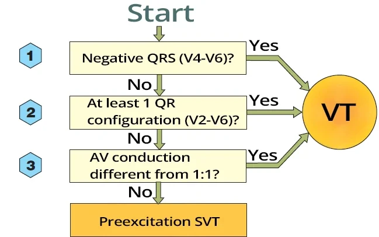
Thuật toán Brugada cải biên (VT và PXT)
- 1. QRS âm (V4-V6)?
- SVT có tiền kích thích có đường dẫn truyền phụ ở đáy các thất
- Do đó vectơ hướng VỀ PHÍA mỏm tim ở V4-V6
- Vì vậy, QRS sẽ dương ở (V4-V6) trong SVT có tiền kích thích
- 2. Có ít nhất 1 dạng QR (V2-V6)?
- Dạng QR chủ yếu xuất hiện ở thất có biến đổi cấu trúc (structurally altered ventricles)
- Ở thất có biến đổi cấu trúc, hầu như luôn xuất hiện tim nhanh thất
- 3. Dẫn truyền nhĩ thất khác 1:1?
- SVT có tiền kích thích luôn có dẫn truyền nhĩ thất 1:1
- Nếu dẫn truyền khác đi thì đó là VT (tương tự phân ly nhĩ thất – AV dissociation)
- Nếu không tiêu chuẩn nào trong 3 tiêu chuẩn ECG được thoả
- Thì tim nhanh phức bộ giãn rộng đó là SVT có tiền kích thích (AVRT nghịch chiều)
Tim nhanh phức bộ giãn rộng
- Độ rộng QRS 0.2s
- Tần số tim 160/phút.
- Thuật toán Brugada cải biên
- Điều kiện 1: QRS có âm không (V4-V6) - CÓ
- Điều này chỉ điểm tim nhanh thất
- Điều kiện 1: QRS có âm không (V4-V6) - CÓ
Tim nhanh phức bộ giãn rộng
- Độ rộng QRS 0.2s
- Tần số tim 200/phút.
- Bệnh nhân có hội chứng WPW
- Trên ECG trong nhịp xoang, có sóng delta
- Thuật toán Brugada cải biên
- Điều kiện 1: QRS có âm không (V4-V6) - KHÔNG
- QRS dương ở V4
- 2. Có ít nhất 1 QR (V2-V6) - KHÔNG
- 3. Dẫn truyền nhĩ thất khác 1:1 - KHÔNG
- Điều kiện 1: QRS có âm không (V4-V6) - KHÔNG
- Bệnh nhân có SVT có tiền kích thích (AVRT nghịch chiều)
- Điều này được khẳng định bởi việc trong nhịp xoang có sóng delta
Tim nhanh phức bộ giãn rộng
- Bệnh nhân 37 tuổi không điều trị gì, không có bệnh tim cấu trúc
- Đột ngột xuất hiện hồi hộp trống ngực (cảm giác tim đập thình thịch)
- Độ rộng QRS 0.2s
- Tần số tim 180/phút.
- Thuật toán Brugada cải biên
- Điều kiện 1: QRS có âm không (V4-V6) - KHÔNG
- 2. Có ít nhất 1 QR (V2-V6) - KHÔNG
- 3. Dẫn truyền nhĩ thất khác 1:1 - KHÔNG
- Bệnh nhân có SVT có tiền kích thích (AVRT nghịch chiều)
- Bệnh nhân có huyết động không ổn định
- Đã tiến hành sốc điện chuyển nhịp cấp cứu
- Sau đó chuyển về nhịp xoang, xem ECG tiếp theo
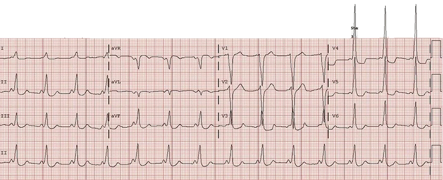
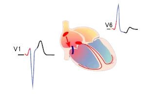
Hội chứng WPW (type B)
- Đây là ECG của bệnh nhân trên sau khi chuyển về nhịp xoang
- Đây là hội chứng WPW (type B)
- Khoảng PQ ngắn lại
- QRS giãn rộng ở mức ranh giới (120ms)
- Các sóng delta
- Đường dẫn truyền phụ nằm ở nhĩ phải
- Bệnh nhân có đường dẫn truyền phụ (hội chứng WPW)
- Trên ECG trước đó là AVRT nghịch chiều
Chương 4. Thuật toán aVR (Vereckei)
Thuật toán aVR Vereckei (tim nhanh thất — ventricular tachycardia, VT — so với SVT dẫn truyền lệch hướng)
Tim nhanh thất
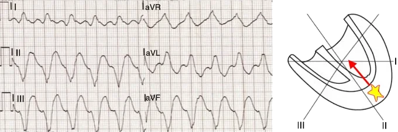
- Trong tim nhanh thất:
- Hình thành ổ ngoại vị (ectopic focus) ở thất phát xung động với tần số > 100/phút.
- Thất được khử cực qua cơ tim, không qua hệ thống dẫn truyền
- Do đó, các phức bộ QRS giãn rộng > 0.12 s
Ổ ngoại vị trong tim nhanh thất
- Thường gặp nhất ở phần thấp của tim, tại mỏm tim
- Vectơ khử cực thất tổng hợp do đó hướng lên trên về phía chuyển đạo aVR (từ chuyển đạo II)
- Đây là nguyên lý chẩn đoán chính của thuật toán aVR
Thuật toán aVR
- Phân biệt trong tim nhanh phức bộ giãn rộng (wide complex tachycardia – WCT)
- Phân biệt giữa tim nhanh thất và tim nhanh trên thất dẫn truyền lệch hướng (aberrant supraventricular tachycardia – SVT)
- Không phân biệt được SVT có tiền kích thích (pre-excited SVT – PXT) (AVRT nghịch chiều – antidromic AVRT)
- Rất đơn giản và nhanh
- Vì chỉ cần đánh giá chuyển đạo aVR trên ECG
- Nếu QRS (ở aVR) dương, điều này chỉ ra tim nhanh thất
- Vì chỉ cần đánh giá chuyển đạo aVR trên ECG
Tim nhanh phức bộ giãn rộng
- Thuật toán aVR phân biệt cơ chế của tim nhanh phức bộ giãn rộng
- Phân biệt giữa tim nhanh thất và SVT dẫn truyền lệch hướng (nhưng không phân biệt được với SVT có tiền kích thích)
- Thuật toán duy nhất phân biệt được VT với SVT có tiền kích thích là thuật toán Brugada-Stuerer
Thuật toán aVR trong thực hành lâm sàng
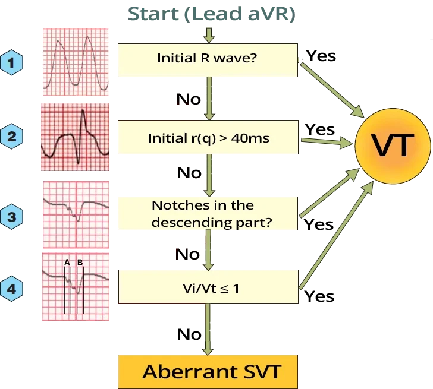
- Độ nhạy: 96%, độ đặc hiệu: 99%
- Thuật toán aVR
- Đánh giá tuần tự 4 tiêu chuẩn ECG (chỉ trên chuyển đạo aVR); nếu không tiêu chuẩn nào thoả, đó là SVT dẫn truyền lệch hướng
- Phân biệt tim nhanh phức bộ giãn rộng: phân biệt VT với SVT dẫn truyền lệch hướng
- Không phân biệt được VT với SVT có tiền kích thích (thuật toán Brugada-Stuerer)
Thuật toán aVR (chỉ đánh giá chuyển đạo aVR)
- 1. Có sóng R khởi đầu?
- Nếu sóng R khởi đầu chiếm ưu thế ở aVR, điều này chỉ ra tim nhanh thất
- Ổ ngoại vị nằm ở vùng mỏm tim, và vectơ hướng về phía chuyển đạo aVR
- Nếu sóng R khởi đầu chiếm ưu thế ở aVR, điều này chỉ ra tim nhanh thất
- 2. r(q) khởi đầu > 40ms
- Nếu thất được khử cực qua hệ thống dẫn truyền (trong SVT)
- Thì thất khử cực nhanh và phần khởi đầu của phức bộ QRS r(q) sẽ hẹp < 40ms
- Nếu thất được khử cực qua cơ tim từ một ổ ngoại vị (trong VT)
- Thì thất khử cực chậm và phần khởi đầu của phức bộ QRS r(q) sẽ rộng > 40ms
- Nếu thất được khử cực qua hệ thống dẫn truyền (trong SVT)
- 3. Có khấc ở nhánh xuống của phức bộ QRS?
- Nếu ổ ngoại vị ở vùng đáy tim, thì vectơ hướng ra xa aVR (QRS ở aVR âm)
- VT hầu như luôn xảy ra trên tim có biến đổi cấu trúc
- Và xung động bị "mắc kẹt" trong quá trình khử cực (ví dụ, đi vòng qua sẹo của nhồi máu cơ tim)
- Do đó, các khấc (notch) xuất hiện ở phần khởi đầu của phức bộ QRS (trong quá trình khử cực) (dấu hiệu Josephson)
- VT hầu như luôn xảy ra trên tim có biến đổi cấu trúc
- Nếu ổ ngoại vị ở vùng đáy tim, thì vectơ hướng ra xa aVR (QRS ở aVR âm)
- 4. Vi/Vt ≤ 1
- Đánh giá tốc độ lan truyền của xung động ở đầu và cuối phức bộ QRS
- Trong VT, xung động lan chậm ở phần đầu của QRS
- Vì nó lan qua cơ tim và không qua hệ thống dẫn truyền như trong SVT
Thuật toán aVR – hạn chế
- Thuật toán aVR rất nhanh và đơn giản,
vì chỉ đánh giá chuyển đạo aVR - Dựa trên nguyên lý rằng ổ ngoại vị trong tim nhanh thất (VT) thường gặp nhất ở phần thấp của tim
- Trong những trường hợp đó, vectơ tổng hợp hướng về phía chuyển đạo aVR và VT được chẩn đoán ngay ở bước 1 của thuật toán
Tim nhanh phức bộ giãn rộng
- Ổ ngoại vị ở mỏm tim, và vectơ tổng hợp hướng về phía chuyển đạo aVR
- Thuật toán aVR
- 1. Sóng R khởi đầu (aVR) - CÓ
- Điều này chỉ ra tim nhanh thất (VT)
- 1. Sóng R khởi đầu (aVR) - CÓ
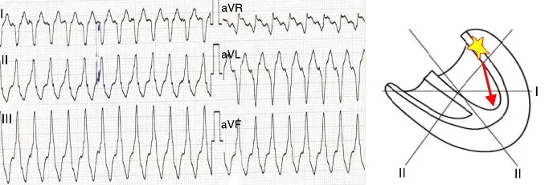
Tim nhanh phức bộ giãn rộng
- Ổ ngoại vị nằm ở đáy tim, và vectơ tổng hợp hướng ra xa chuyển đạo aVR
- Thuật toán aVR
- 1. Sóng R khởi đầu (aVR) - KHÔNG
- Nếu VT không được chẩn đoán ở bước 1, các bước tiếp theo của thuật toán trở nên phức tạp hơn
- 2. r(q) khởi đầu > 40ms - CÓ
- Điều này chỉ ra tim nhanh thất (VT)
- 1. Sóng R khởi đầu (aVR) - KHÔNG
Khử cực trong VT
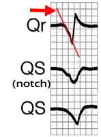
- Trong VT, thất được khử cực từ một ổ ngoại vị thất
- Qua cơ tim, không qua hệ thống dẫn truyền
- Khử cực qua cơ tim thì chậm
- Do đó, phần đầu của QRS ít dốc hơn
- So với khử cực qua hệ thống dẫn truyền
- Do đó, phần đầu của QRS ít dốc hơn
- Khấc thường gặp nhất trên tim có biến đổi cấu trúc
- Xung động có thể bị "kẹt" khi lan truyền, ví dụ, trong sẹo của nhồi máu cơ tim
- Từ thực tế này dẫn đến
- Các bước 2, 3 và 4 của thuật toán aVR
Khử cực trong SVT dẫn truyền lệch hướng
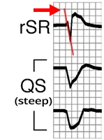
- Trong SVT, thất được khử cực
- Qua hệ thống dẫn truyền, không qua cơ tim
- Khử cực qua hệ thống dẫn truyền thì nhanh
- Do đó, phần đầu của QRS dốc hơn
- So với khử cực qua cơ tim trong VT
- Do đó, phần đầu của QRS dốc hơn
- Phần đầu của QRS vẫn dốc ngay cả trong SVT có block nhánh
- Vì một thất được khử cực nhanh
- Qua nhánh bó His còn nguyên vẹn
- Vì một thất được khử cực nhanh
Tỉ số Vi/Vt ≤ 1
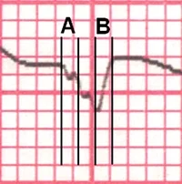
- Đây là bước 4 của thuật toán aVR
- Vi là khoảng cách (mV) mà xung động đi được ở đầu quá trình khử cực (ở đầu QRS) trong 40ms (trong 1 ô nhỏ)
- Vt là khoảng cách (mV) mà xung động đi được ở cuối quá trình khử cực (ở cuối QRS) trong 40ms (trong 1 ô nhỏ)
- Nếu tỉ số Vi/Vt ≤ 1, điều này chỉ ra tim nhanh thất
- Công thức dựa trên nguyên lý rằng trong VT, phần khởi đầu của QRS ít dốc hơn so với SVT
- Vi = 1mm (A: chiều cao đường cong trong 40ms là 1mm)
- Vt = 3mm (B: chiều cao đường cong trong 40ms là 3mm)
- Vi/Vt (1/3 = 0.33) ≤ 1, chỉ ra tim nhanh thất
- Theo đường ghi ECG đã cho, khi dùng thuật toán aVR
- VT đã được chẩn đoán ngay ở bước 2 - độ rộng Q khởi đầu > 40ms (80ms)
- Bước 4 của thuật toán aVR trong thực hành là khó áp dụng
- Tốt nhất nên đánh dấu điểm bắt đầu và kết thúc của QRS bằng thước, rồi đo 40ms trên aVR (1 ô nhỏ)
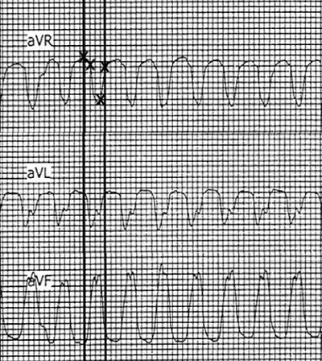
Tim nhanh phức bộ giãn rộng
- Vi = 1.5mm (A: chiều cao đường cong trong 40ms là 1mm)
- Vt = 6mm (B: chiều cao đường cong trong 40ms là 3mm)
- Vi/Vt (1.5/6 = 0.25) ≤ 1, chỉ ra tim nhanh thất
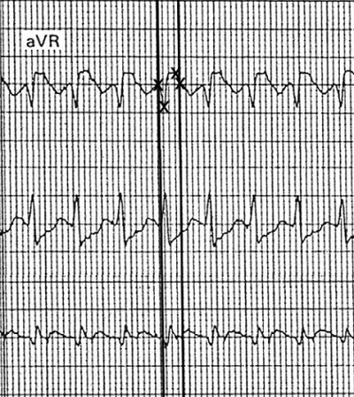
Tim nhanh phức bộ giãn rộng
- Vi = 4mm (A: chiều cao đường cong trong 40ms là 1mm)
- Vt = 2mm (B: chiều cao đường cong trong 40ms là 3mm)
- Vi/Vt (4/2 = 2) > 1, chỉ ra SVT dẫn truyền lệch hướng
Tim nhanh phức bộ giãn rộng
- Thời gian QRS: 0.2s
- Tần số tim 160/phút.
- Thuật toán aVR
- Điều kiện 1: Có sóng R khởi đầu (aVR) không - CÓ
- Đó là tim nhanh thất
- Điều kiện 1: Có sóng R khởi đầu (aVR) không - CÓ
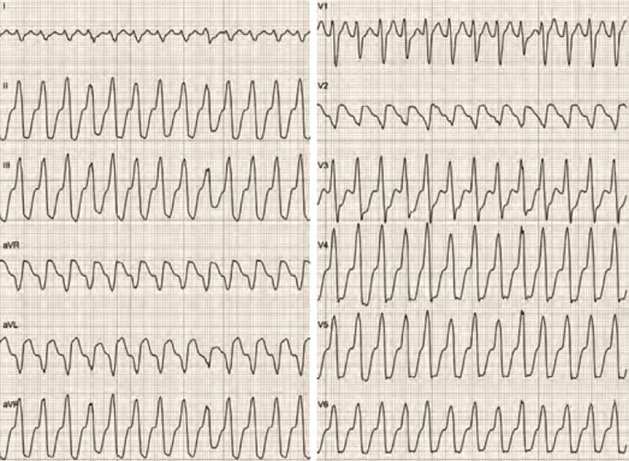
Tim nhanh phức bộ giãn rộng
- Thời gian QRS: 0.18s
- Tần số tim 166/phút.
- Luân phiên QRS (QRS alternans)
- Biên độ các phức bộ QRS thay đổi đều đặn
- Thuật toán aVR
- Điều kiện 1: Có sóng R khởi đầu (aVR) không - KHÔNG
- Điều kiện 2: r(q) khởi đầu > 40ms - CÓ
- Đó là tim nhanh thất
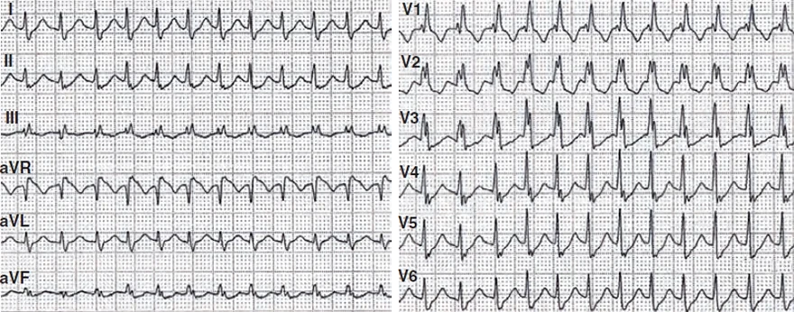
Tim nhanh phức bộ giãn rộng
- Thời gian QRS: 0.14s
- Tần số tim 212/phút.
- Thuật toán aVR
- Điều kiện 1: Có sóng R khởi đầu (aVR) không - KHÔNG
- Điều kiện 2: r(q) khởi đầu > 40ms - KHÔNG
- Điều kiện 3: Có khấc trên nhánh xuống? - KHÔNG
- Điều kiện 4: Vi/Vt ≤ 1 - KHÔNG
- Đó là SVT có RBBB (cụ thể là AVNRT có RBBB)
- Hình ảnh điển hình của RBBB (ở V1, rsR' - "tai thỏ" bên phải lớn hơn)
Chương 5. Thời gian đạt đỉnh sóng R (RWPT) ở chuyển đạo II
Tiêu chuẩn thời gian đạt đỉnh sóng R (R wave peak time – RWPT) ở chuyển đạo II, tiêu chuẩn Pavas
Khử cực trong SVT dẫn truyền lệch hướng
- Trong tim nhanh trên thất (supraventricular tachycardia – SVT), hai thất được khử cực
- Qua hệ thống dẫn truyền chứ không phải qua cơ tim
- Khử cực qua hệ thống dẫn truyền thì nhanh
- Do đó, phần đầu của phức bộ QRS dốc hơn
- So với khử cực qua cơ tim trong tim nhanh thất (ventricular tachycardia – VT)
- Do đó, phần đầu của phức bộ QRS dốc hơn
- Phần đầu của phức bộ QRS dốc ngay cả trong SVT có block nhánh (bundle branch block)
- Vì một thất được khử cực nhanh
- Qua nhánh bó His còn nguyên vẹn
- Vì một thất được khử cực nhanh
Khử cực trong tim nhanh thất
- Trong tim nhanh thất (VT), hai thất được khử cực từ một ổ ngoại vị thất (ectopic focus)
- Qua cơ tim, không phải qua hệ thống dẫn truyền
- Khử cực qua cơ tim thì chậm
- Do đó, phần đầu của phức bộ QRS ít dốc hơn
- So với khử cực qua hệ thống dẫn truyền
- Do đó, phần đầu của phức bộ QRS ít dốc hơn
- Khấc (notch) thường xuất hiện ở tim có biến đổi cấu trúc
- Xung động có thể bị "mắc kẹt" trong quá trình lan truyền, ví dụ trong sẹo của nhồi máu cơ tim
- Từ thực tế này rút ra
- Chẩn đoán VT dựa vào chuyển đạo II
Chuyển đạo II và tim nhanh thất
- Đường cong ECG ở chuyển đạo II đóng vai trò một thuật toán chẩn đoán cho tim nhanh phức bộ giãn rộng (wide complex tachycardia – WCT)
- Chuyển đạo II giúp phân biệt tim nhanh phức bộ giãn rộng
- Phân biệt tim nhanh thất với tim nhanh trên thất (SVT) dẫn truyền lệch hướng
- Không phân biệt được SVT có tiền kích thích (pre-excited SVT – PXT) (ví dụ AVRT nghịch chiều (antidromic AVRT))
- Cách này rất đơn giản và nhanh
- Vì chỉ cần đánh giá ECG ở chuyển đạo II
Tim nhanh phức bộ giãn rộng
- Chuyển đạo II giúp phân biệt cơ chế của tim nhanh phức bộ giãn rộng
- Phân biệt tim nhanh thất với SVT dẫn truyền lệch hướng (nhưng không phân biệt được với SVT có tiền kích thích)
- Thuật toán duy nhất phân biệt được VT với SVT có tiền kích thích là thuật toán Brugada-Stuerer
Chuyển đạo II và tim nhanh thất trong thực hành lâm sàng
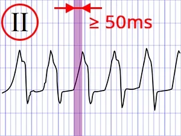
- Độ nhạy: 93%, Độ đặc hiệu: 99%
- Trong tim nhanh thất, có kéo dài thời gian khử cực thất
- Đoạn đầu của phức bộ QRS do đó ít dốc hơn so với tim nhanh kiểu SVT
- Thời gian đạt đỉnh sóng R (RWPT)
- Đo từ khởi đầu phức bộ QRS đến đỉnh của phức bộ QRS
- Nếu ở chuyển đạo II ≥ 50ms, điều đó chỉ ra tim nhanh thất
Tim nhanh phức bộ giãn rộng
- RWPT ở chuyển đạo II ≥ 50ms gợi ý tim nhanh thất
- Nếu không có sóng R ở chuyển đạo II
- Thì đo thời gian từ khởi đầu phức bộ QRS đến đỉnh của sóng Q (sóng S)
- Tùy thuộc vào hướng của vectơ khử cực thất
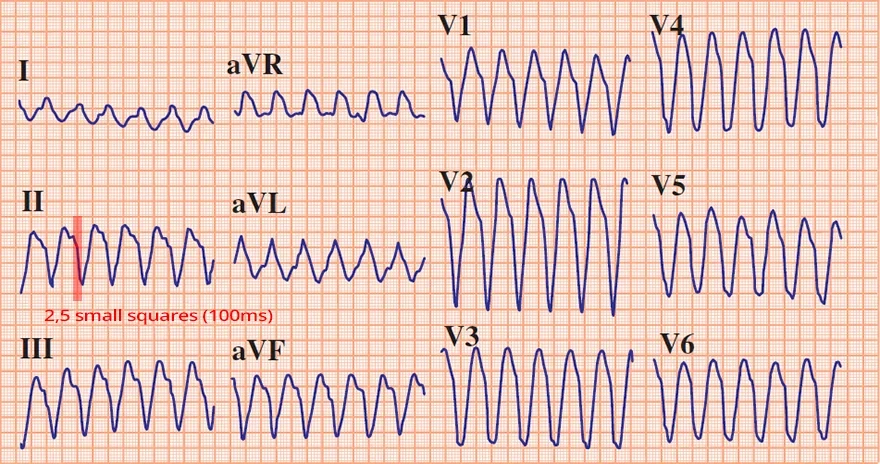
Tim nhanh phức bộ giãn rộng
- Thời gian QRS 0.2s
- Tần số tim 160/phút
- RWPT ở chuyển đạo II ≥ 50ms - CÓ
- Chỉ ra tim nhanh thất
- RWPT được đo
- Từ khởi đầu khử cực (QRS)
- Đến đỉnh của khử cực (hầu như luôn luôn là sóng R)
- Đôi khi đó là sóng Q (sóng S)
- Tùy thuộc vào hướng của vectơ khử cực thất
Tim nhanh phức bộ giãn rộng
- Thời gian QRS 0.18s
- Tần số tim 166/phút
- Luân phiên QRS (QRS alternans)
- Biên độ các phức bộ QRS thay đổi đều đặn
- RWPT ở chuyển đạo II ≥ 50ms - CÓ
- Chỉ ra tim nhanh thất
Tim nhanh phức bộ giãn rộng
- Thời gian QRS 0.14s
- Tần số tim 212/phút
- RWPT ở chuyển đạo II ≥ 50ms - KHÔNG
- Chỉ ra SVT kèm RBBB (cụ thể là AVNRT — tim nhanh vào lại nút nhĩ thất — kèm RBBB)
- Dạng điển hình của RBBB (rsR' - "tai thỏ" bên phải lớn hơn)
Chương 6. Thuật toán Griffith
Thuật toán Griffith (block nhánh)
SVT dẫn truyền lệch hướng
- Dẫn truyền lệch hướng (aberrant conduction)
- Là sự gián đoạn dẫn truyền xung động qua hệ thống dẫn truyền của thất
- Thường gặp nhất là block nhánh (bundle branch block)
- RBBB (block nhánh phải – Right Bundle Branch Block)
- LBBB (block nhánh trái – Left Bundle Branch Block)
- Trong block nhánh, phức bộ QRS giãn rộng tới > 0.12s
- Do quá trình hoạt hoá thất bị kéo dài, xuất phát từ nhánh đối bên
- Tim nhanh trên thất dẫn truyền lệch hướng (supraventricular tachycardia – SVT)
- Là tim nhanh kèm rối loạn dẫn truyền trong thất
- Thường gặp nhất là block nhánh
- Là tim nhanh phức bộ giãn rộng (wide complex tachycardia – WCT)
- Tương tự tim nhanh thất (ventricular tachycardia – VT)
- Đôi khi không thể phân biệt được với VT
- Việc phân biệt dựa vào các thuật toán chẩn đoán
- Một trong số đó là thuật toán Griffith
- Là tim nhanh kèm rối loạn dẫn truyền trong thất
Thuật toán Griffith
- Phân biệt tim nhanh phức bộ giãn rộng (WCT)
- Phân biệt giữa tim nhanh thất (VT) và SVT dẫn truyền lệch hướng (SVT)
- Không phân biệt được SVT có tiền kích thích (pre-excited SVT – PXT) (AVRT nghịch chiều – antidromic AVRT)
- Tương đối đơn giản (dù không chính xác bằng các thuật toán khác)
- Nếu WCT không có hình ảnh block nhánh (RBBB, LBBB)
- Thì đó là tim nhanh thất (VT)
- Nếu WCT không có hình ảnh block nhánh (RBBB, LBBB)
Tim nhanh phức bộ giãn rộng
- Thuật toán Griffith phân biệt cơ chế của tim nhanh phức bộ giãn rộng
- Phân biệt tim nhanh thất (VT) với SVT dẫn truyền lệch hướng (không phân biệt với SVT có tiền kích thích)
- Thuật toán duy nhất phân biệt được VT với SVT có tiền kích thích là thuật toán Brugada-Steurer
Thuật toán Griffith trong thực hành lâm sàng
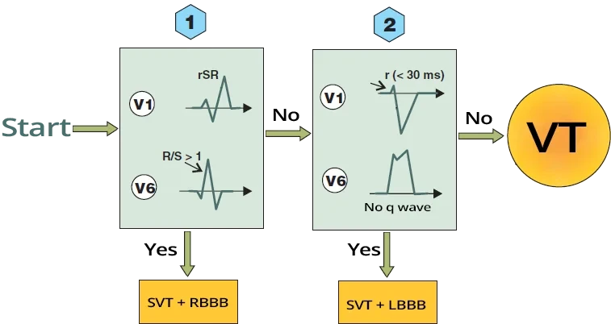
- Độ nhạy: 95%, độ đặc hiệu: 64%
- Thuật toán Griffith
- Nếu WCT không có hình ảnh block nhánh (RBBB, LBBB)
- Thì đó là tim nhanh thất (VT)
- Nếu WCT không có hình ảnh block nhánh (RBBB, LBBB)
Thuật toán Griffith
- 1. WCT có hình ảnh RBBB?
- rsR´ (V1)
- RS (V6) và R/S > 1
- 2. WCT có hình ảnh LBBB?
- rS, QS (V1)
- Thời gian sóng S < 70ms (từ khởi đầu QRS đến đỉnh sóng S)
- Thời gian sóng r < 30ms
- Sóng R không có sóng Q (V6)
- rS, QS (V1)
- Nếu cả hai điều kiện trên đều không thoả mãn
- Thì đó là tim nhanh thất (VT)
Tim nhanh phức bộ giãn rộng
- Bề rộng QRS 0.2s
- Tần số tim 160/phút
- Thuật toán Griffith
- 1. Tim nhanh có hình ảnh RBBB không? – KHÔNG
- 2. Tim nhanh có hình ảnh LBBB không? – KHÔNG
- Đây là tim nhanh thất
Tim nhanh phức bộ giãn rộng
- Bề rộng QRS 0.18s
- Tần số tim 166/phút
- Luân phiên QRS (QRS alternans)
- Biên độ các phức bộ QRS thay đổi đều đặn
- Thuật toán Griffith
- 1. Tim nhanh có biểu hiện hình ảnh RBBB không? – KHÔNG
- 2. Tim nhanh có biểu hiện hình ảnh LBBB không? – KHÔNG
- Đây là tim nhanh thất
Tim nhanh phức bộ giãn rộng
- Bề rộng QRS 0.14s
- Tần số tim 212/phút
- Thuật toán Griffith
- 1. Tim nhanh có biểu hiện hình ảnh RBBB không? – CÓ
- Đây là SVT dẫn truyền lệch hướng kèm RBBB
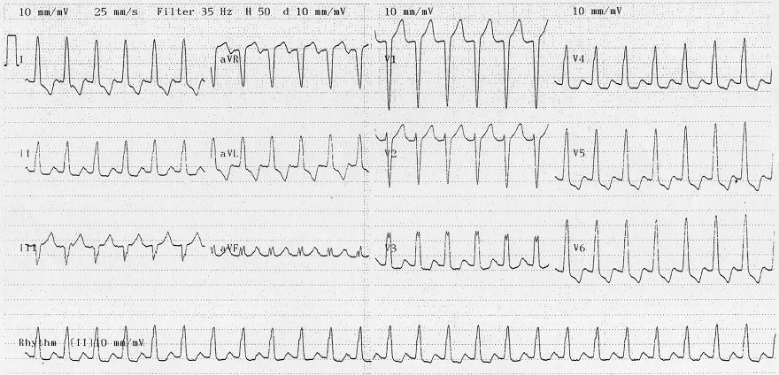
Tim nhanh phức bộ giãn rộng
- Bề rộng QRS 0.14s
- Tần số tim 150/phút
- Thuật toán Griffith
- 1. Tim nhanh có biểu hiện hình ảnh RBBB không? – KHÔNG
- 2. Tim nhanh có biểu hiện hình ảnh LBBB không? – CÓ
- Đây là SVT dẫn truyền lệch hướng kèm LBBB
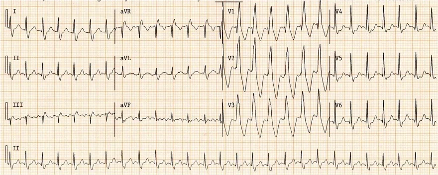
Tim nhanh phức bộ giãn rộng
- Bề rộng QRS 0.18s
- Tần số tim 150/phút
- Thuật toán Griffith
- 1. Tim nhanh có biểu hiện hình ảnh RBBB không? – CÓ
- Đây là SVT dẫn truyền lệch hướng kèm RBBB
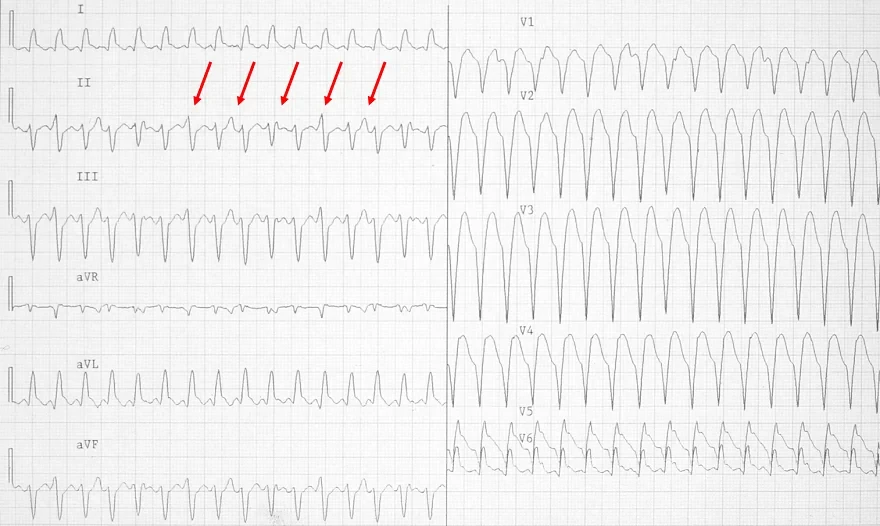
Tim nhanh phức bộ giãn rộng
- Bề rộng QRS 0.18s
- Tần số tim 210/phút
- Thuật toán Griffith
- 1. Tim nhanh có biểu hiện hình ảnh RBBB không? – KHÔNG
- 2. Tim nhanh có biểu hiện hình ảnh LBBB không? – CÓ
- Theo thuật toán Griffith, đây là SVT dẫn truyền lệch hướng kèm LBBB
- Tuy nhiên, thuật toán này không chính xác bằng thuật toán Brugada
- ECG cho thấy phân ly nhĩ thất (AV dissociation) (các mũi tên)
- Đây là dấu hiệu then chốt của tim nhanh thất
Tim nhanh phức bộ giãn rộng
- Bề rộng QRS 0.18s
- Tần số tim 150/phút
- Thuật toán Griffith
- 1. Tim nhanh có biểu hiện hình ảnh RBBB không? – KHÔNG
- 2. Tim nhanh có biểu hiện hình ảnh LBBB không? – CÓ
- Theo thuật toán Griffith, đây là SVT dẫn truyền lệch hướng kèm LBBB
- Tuy nhiên, thuật toán này không chính xác bằng thuật toán Brugada
- ECG cho thấy phân ly nhĩ thất (các mũi tên)
- Đây là dấu hiệu then chốt của tim nhanh thất
Nguồn tài liệu (Sources)
Nguồn: ECGbook.com — Making Medical Education Free (www.ecgbook.com)
Cập nhật gốc: 14/08/2026
- ECG from Basics to Essentials Step by Step
- litfl.com
- ecgwaves.com
- metealpaslan.com
- medmastery.com
- uptodate.com
- ecgpedia.org
- wikipedia.org
- Strong Medicine
- Understanding Pacemakers